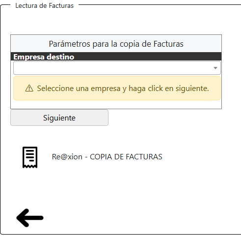
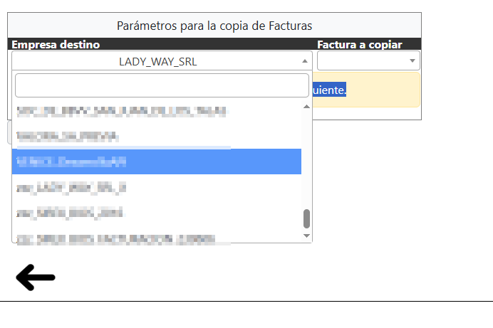
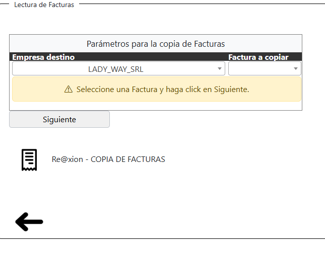
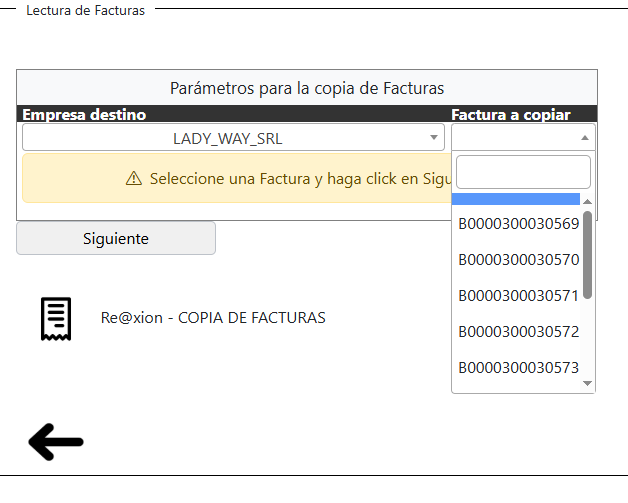
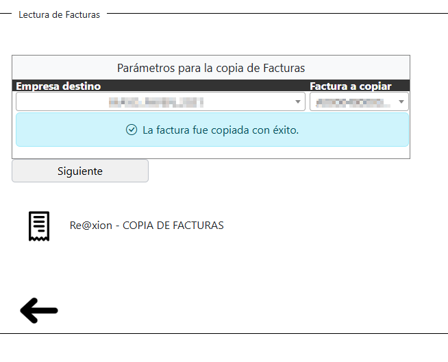
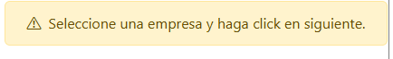
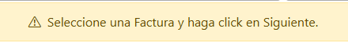
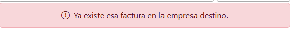

Módulo del Sistema
Copia Facturas.
- Versión: LadyApi001
- Fecha de actualización: 20/05/2025
- Propósito: Permite copiar una factura previamente emitida según la empresa que elijas para reutilizar sus datos rápidamente en una nueva base de datos.
Descripción General
¿Qué hace este módulo?
Este módulo permite copiar facturas desde una empresa seleccionada en la lista hacia otra empresa
definida previamente en el módulo de “Configuración de directorio”. De este modo, podes replicar
facturas entre empresas de forma rápida y segura.
¿Para qué sirve?
Sirve para “reutilizar facturación existente” entre distintas empresas configuradas en el sistema, lo que facilita tareas como:
- Replicar ventas realizadas en una empresa hacia otra sin tener que cargarlas manualmente.
- Ahorrar tiempo en procesos repetitivos.
- Mantener consistencia en las facturas entre empresas con estructuras similares.
Pantalla principal
La pantalla principal consta de un selector de empresa. Al hacer clic en la flecha hacia abajo, se desplegará una lista con las distintas empresas disponibles. Además, el selector permite escribir directamente el nombre de la empresa para filtrar la lista y encontrarla más rápidamente. Para ello, simplemente hace clic en el campo y comienza a escribir, el sistema irá mostrando coincidencias a medida que escribís. Al ingresar por primera vez al módulo, el usuario verá un mensaje que indica: "Seleccione una empresa y haga clic en Siguiente" Una vez seleccionada la empresa deseada, hace clic en el botón "Siguiente" para continuar con el proceso.


Selección de factura
Luego de hacer clic en el botón "Siguiente", aparecerá un mensaje que dice: "Seleccione una factura y haga clic en Siguiente." A la derecha se habilitará un selector similar al de empresas, pero en este caso mostrará las facturas disponibles correspondientes a la empresa seleccionada previamente. También podés filtrar las facturas escribiendo en el campo de búsqueda, lo que te permitirá encontrar la factura deseada de forma más rápida. Una vez que hayas seleccionado la factura, hace clic en el botón "Siguiente" para continuar con el proceso.


Copia de factura
Una vez que le haya dado click en siguiente se copiara con éxito la factura en la empresa destino que tiene configurada en el módulo de “Configuración de directorio”, mostrando así un mensaje que dice: “La factura fue copiada con éxito”

Campos obligatorios y Mensajes de alertas
Todos los campos son obligatorios. Si intenta hacer clic en el botón "Siguiente" sin haber seleccionado una empresa, el sistema mostrará un mensaje como el siguiente:

Del mismo modo, si intenta hacer clic en "Siguiente" sin haber seleccionado una factura para copiar, el sistema mostrará un mensaje como el siguiente:

Es posible que la factura ya exista en la empresa destino. En ese caso, el sistema mostrará un mensaje en color rojo indicando que la factura ya se encuentra registrada en dicha empresa:

Empresa seleccionada previamente
El sistema cuenta con una funcionalidad que almacena la última empresa seleccionada por el operador. Esto significa que, al volver a ingresar al módulo de “Copia de facturas”, el selector de empresas mostrará por defecto la última empresa que fue utilizada. Esta característica está diseñada para agilizar el flujo de trabajo, especialmente en situaciones donde el operador trabaja repetidamente con la misma empresa. Así, se evita tener que buscar y seleccionar nuevamente la empresa cada vez que se accede al módulo, lo que reduce tiempos y mejora la experiencia de uso. Nota: Si el operador desea cambiar de empresa, puede hacerlo fácilmente desplegando el selector y eligiendo una nueva opción. Quedará por defecto hasta que el operador lo cambie.